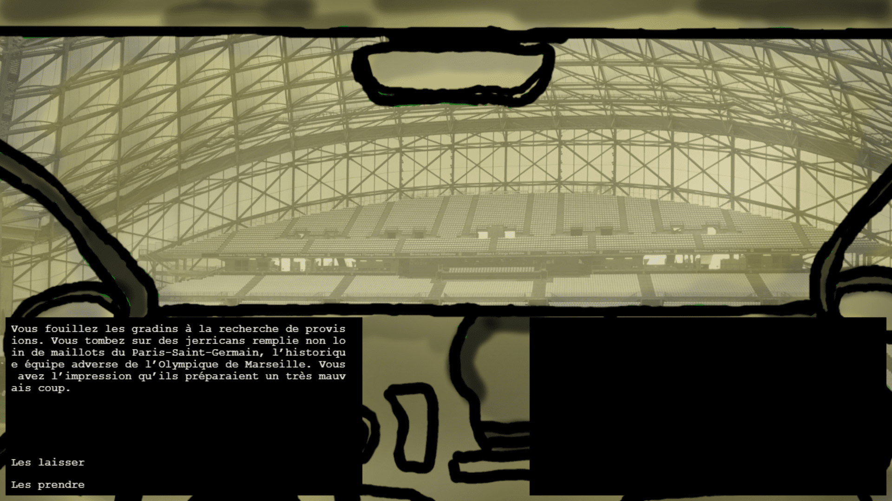
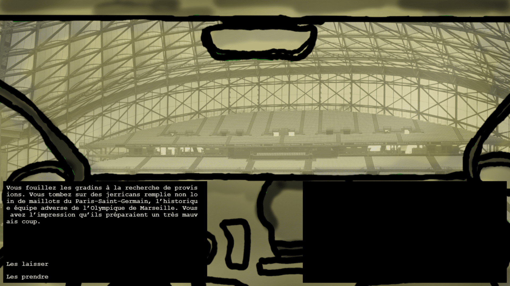

Unijam 2022 — L'effondrement
The goal of this Game Jam was to create a game in less than 48 hours, based on the theme "Distance makes everything infinitely more precious". In a team of four, with Allan David, Jeffrey Bondue and Adrien Chateau, we created the game "L'effondrement" ("The Collapse"). It is a road trip visual novel where you must make the right decisions to reach your destination. To survive the collapse, a group of five characters must travel to Perpignan, the last bastion of humanity. They start by gathering resources at a supermarket in Lille.
In this project, I was responsible for identifying French cities that allowed for a logical route and mapping out possible paths. Together with my teammate Adrien Chateau, we searched for representations of these cities, such as landmarks or famous locations, to help the player quickly and easily recognize where they are. We also created scenarios for each city, based on the images chosen to represent them. These increasingly complex scenarios are filled with various references, drawn from the cities' reputations, famous figures, and their portrayal in other media.

Start of the game
At the start of the game, a text explaining the situation appears, followed by the shopping phase in the convenience store. Each character is introduced via a profile card, and they share a common budget. Every character has specific skills that make them more or less effective in different areas.
The player must strategically choose which resources to buy, as both money and time are limited. They can prioritize food to keep their characters alive until the end of the road trip, or explore different aisles to find unexpected yet valuable resources for the journey.
Next, the player selects a driver. All the characters are visible in the back of the van, and by hovering over their portraits with the cursor, the player can view their profile card. This card shows their identity, skills, and their status in terms of health, fatigue, hunger, and thirst. A character who is too exhausted cannot drive, and a character is considered dead when their health bar is empty. If their hunger or thirst bar is empty, their health gradually decreases.
 

Choices
After choosing the driver, the next step is to select the destination. Depending on the available resources, some destinations may be inaccessible. In the game, fuel represents the maximum distance the player can travel. If the player runs out of fuel, they lose the game because the characters can no longer move. Fuel is therefore an extremely valuable resource.
There are two types of routes available, depending on the amount of fuel the player has: a regular road and a highway. Depending on the city, the player can access one or four other cities. The regular road takes the player to the next city and costs one unit of fuel. The highway allows the player to skip a city and reach the next one, but it costs two units of fuel.
Once the destination is reached, the player sees through the driver's eyes and is presented with two choices, one of which is usually more beneficial than the other. After making the first decision, the player must choose which character will carry out the action. This character will lose or gain health and/or energy depending on the player's choice. Some choices also allow the player to recover fuel.
After the action is completed, the next day begins. The player must again select a driver, then a destination, and so on. Each new day, the characters lose a bit of hunger and thirst. The player must therefore find the right paths and make the right decisions if they wish to reach the final destination.